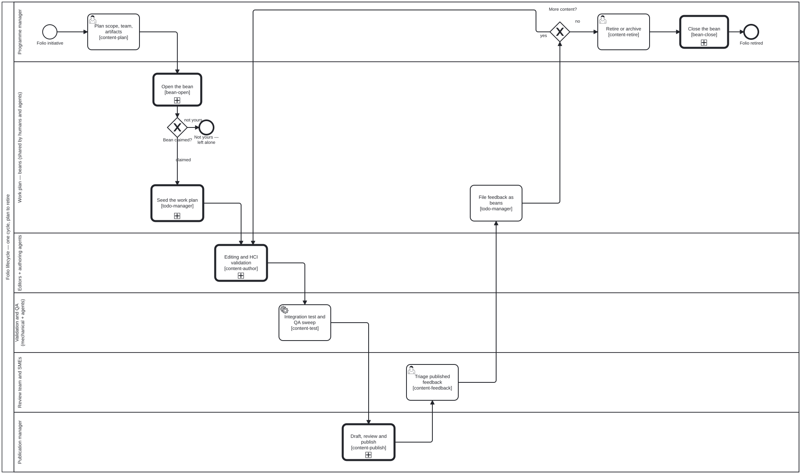

El ciclo de vida del contenido
El ciclo de vida del contenido
✎ Edit TR
Cada tipo de contenido avanza a través del mismo ciclo de vida, proporcionado por el
paquete transversal de habilidades content-lifecycle:

Fuente BPMN 2.0 · SVG a tamaño completo

| Etapa | Habilidad | Qué ocurre |
|---|---|---|
| plan | content-plan | Delimitar el alcance del trabajo, identificar artefactos y actores |
| author | content-author | Crear artefactos estructurados a partir del material fuente |
| validate | content-validate | Verificar frente al esquema y las restricciones |
| review | content-review | Revisión humana / por expertos (SME) frente a criterios |
| test | content-test | QA automatizado, compilación en verde, demostraciones/validadores aprobados |
| publish | content-publish | Renderizar y desplegar la versión publicada |
| feedback | content-feedback | Capturar y canalizar la retroalimentación de los revisores |
| retire | content-retire | Desaprobar o archivar un artefacto |
Las etapas del ciclo de vida son las mismas independientemente del tipo de contenido; lo que varía son las habilidades de autoría y los artefactos que produce cada tipo. Para consultar la lista completa de habilidades y los roles que las impulsan, consulta Habilidades y roles.
Dos cosas que los ocho nombres de etapa ocultan, y el diagrama no: author y
validate no son fases consecutivas sino un bucle —cada cambio propuesto pasa
por la compuerta de validación de HCI, y el editor ve los hallazgos antes de que se
confirme nada—, y review ocurre dos veces, una por cambio y otra sobre el
borrador ensamblado. Ambos se amplían en sus propios diagramas en la página del
flujo de publicación.